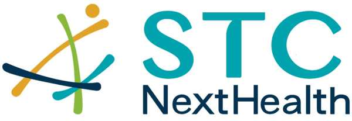
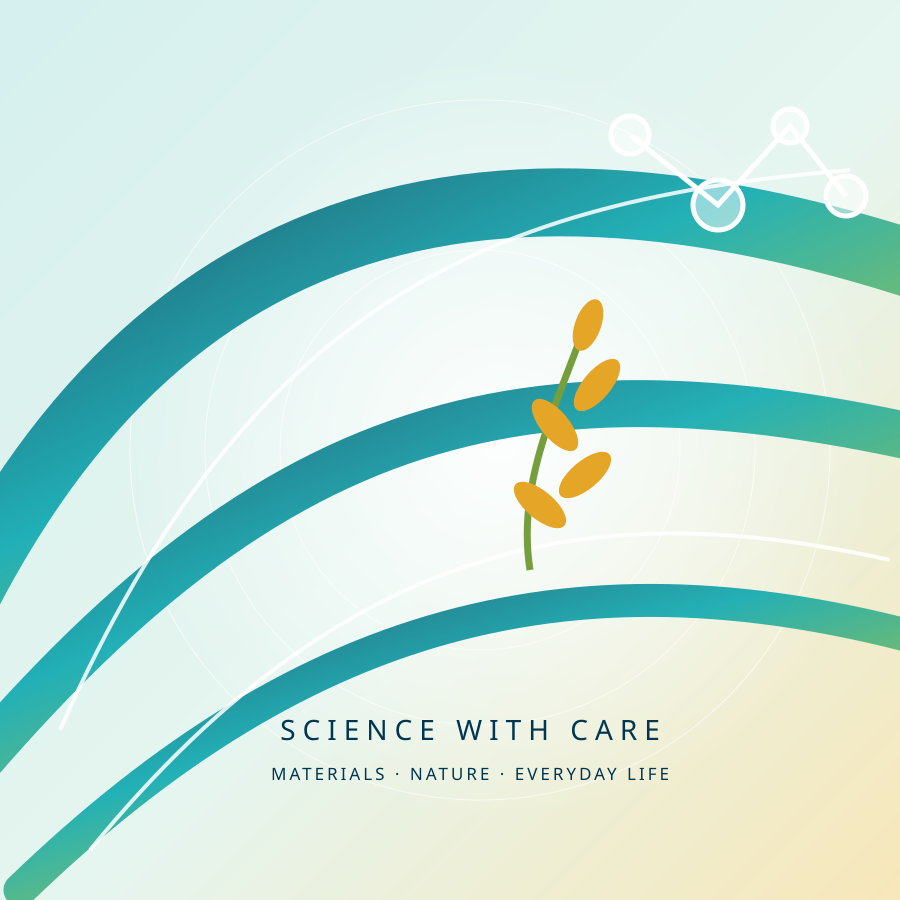

STCNextHealthClinical Repair
Serum
Serum
精粹修護精華
Clinical Repair Serum · 50 mL
NT$1,680
繁中｜EN從材料科技的創新研發，到肌膚、毛孩、居家與植物營養的日常照護，讓看不見的科技，成為感受得到的舒適與關懷。

SKIN · PET · LIVING · NUTRITION · MATERIAL · PERSONAL
米糠酵母發酵 × 日常保濕修護
探索肌膚系列 ↗好皮福皮膚噴霧與沐浴清潔研發
了解寵物系列 ↗衣物去漬急救 × 生活清潔
探索清潔系列 ↗牛肝菌植物蛋白飲 × 植物來源營養探索
查看產品概念 ↗銀離子濾材 × 氧化鋅噴劑與表面保護膜
探索材料應用 ↗3D 立體氣流室銀離子抗菌防護口罩
了解防護口罩 ↗以科學為基礎，從需求出發。
Clinical Repair Serum · 50 mL
NT$1,680Brightening Repair Emulsion · 50 mL
NT$1,880生活用品防護 · 200 mL
NT$450 現行參考價HAPIFU Pet Care · 開發中
敬請期待※ 商品外觀為提案示意圖，非正式包裝照片。產品價格、功能宣稱及上市狀態以品牌正式核定資料為準。
新品提案與現有產品並列展示，狀態清楚區分。
以菇類與植物來源營養為概念，規劃日常飲用產品。50 mL × 6 瓶為提案包裝規格，配方與標示待確認。
30 mL 隨身清潔概念，針對外出時的局部衣物污漬處理；使用方式及材質適用性以正式標示為準。
銀離子材料應用於空氣設備濾材，須依適用設備與安裝規格選用；抗菌率及持續時間待對應檢測確認。
以 PET 膜材結合氧化鋅抗菌複合材料，規劃用於門把、扶手、櫃檯、桌面與觸控設備等經常接觸的物體表面。抗菌效能、耐磨性與適用材質，應依對應型號的測試報告與使用規格確認。
了解 STC Nanotech 抗菌膜材技術 ↗※ 本區為品牌網站內部展示提案。圖片為概念示意，不代表正式商品外觀；未核定的價格、功效與上市資訊不作對外承諾。
結合立體結構與銀離子材料應用的個人防護產品。口罩的防護等級、抗菌效能、適用情境及使用限制，請以 STC Nanotech 官方產品資訊與檢測資料為準。
STC Nanotech 既有產品｜NextHealth 通路待確認從花蓮東豐有機米的米糠出發，透過酵母發酵與配方研究，探索在地原料的保養應用；同時延續 STC 材料研發經驗，將氧化鋅技術延伸至生活用品防護。
探索台灣在地原料，讓發酵技術成為保養配方的新可能。
延續 STC 材料研發經驗，發展生活用品照護技術。
從光學、材料到生活科技，持續探索有價值的日常應用。
Rooted in Taiwan. Driven by Science. Made for Everyday Care.
回到首頁 ↑